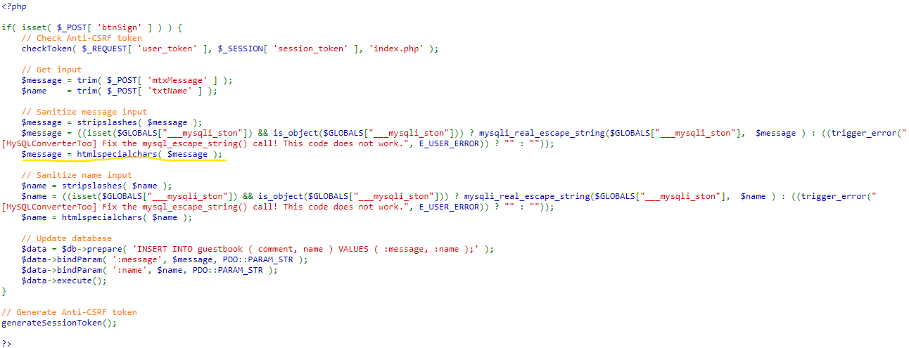

The basic patch for this vulnerability is disabling the attackers by replacing words like
`script` with null ('').
Using htmlspecialchars() will remove any HTML controlling charaters from the HTTP request used for comments.

Add content security policies to your webpages. You can tell the browser to never execute inline
JavaScript, hence nullifying this attack completely. You can find more about possible fixes and patches
here.
Now, you can try this by yourselves!